Xpress est le service de trains rapides longue distance de la MLTC. À mi-chemin entre le train classique et la grande vitesse, Xpress propose des liaisons interrégionales et internationales cadencées, avec un nombre d'arrêts limité et du matériel optimisé pour la performance. Le parc Xpress est très varié, hérité des différents réseaux nationaux intégrés à la MLTC au fil de son expansion.
Locomotives diesel de moyenne puissance utilisées sur les lignes non électrifiées du réseau français. Elles assurent des dessertes Xpress là où la caténaire n'est pas présente.
CC 72100
Dernière MAJ : 21/02/2026
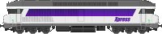
Puissantes locomotives diesel six essieux, les CC 72100 sont les reines des grandes lignes diesel françaises. Elles tractent des compositions Corail sur les axes non électrifiés à des vitesses pouvant atteindre 160 km/h.
D'origine allemande
BR 245
Dernière MAJ : 21/02/2026
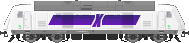
Locomotive diesel-électrique moderne de Bombardier (TRAXX DE ME), la BR 245 est employée sur les lignes non électrifiées du réseau allemand. Sa motorisation multi-engine permet une exploitation économique en fonction de la charge.
D'origine britannique
Class 68
Dernière MAJ : 21/02/2026
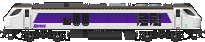
Locomotive diesel moderne construite par Stadler (type Eurolight), la Class 68 assure des services Xpress sur les lignes britanniques non électrifiées. Rapide et fiable, elle représente la nouvelle génération de traction diesel outre-Manche.
Locomotives électriques
D'origine française
BB 7200
Dernière MAJ : 21/02/2026
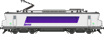
Locomotive monocourant continu 1500 V, la BB 7200 est une machine polyvalente du réseau sud français. Elle assure des Xpress sur les axes électrifiés en courant continu.
BB 8500
Dernière MAJ : 21/02/2026
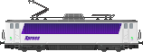
Locomotive monocourant 1500 V à la silhouette caractéristique, la BB 8500 est une vétérane du parc Xpress. Elle assure des liaisons régulières sur les axes du sud de la France.
BB 9200
Dernière MAJ : 21/02/2026
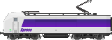
La « Danseuse », locomotive emblématique en courant continu 1500 V. Apte à 200 km/h, les BB 9200 assurent les Xpress les plus rapides sur les lignes classiques du réseau sud.
BB 9400
Dernière MAJ : 21/02/2026
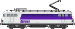
Version modernisée des BB 9300, la BB 9400 circule sous 1500 V continu. Locomotive de ligne classique, elle complète le parc des BB 9200 sur les dessertes Xpress du sud.
BB 15000
Dernière MAJ : 21/02/2026
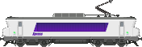
Locomotive monocourant 25 kV alternatif, la BB 15000 est le pilier des Xpress sur le réseau nord et est de la France. Apte à 200 km/h, elle tracte des compositions Corail sur les grands axes.
BB 20100
Dernière MAJ : 21/02/2026
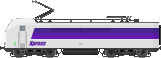
Locomotive bicourant polyvalente, la BB 20100 peut circuler sous 1500 V continu et 25 kV alternatif. Sa flexibilité la rend précieuse pour les Xpress traversant les zones de changement de tension.
BB 22200
Dernière MAJ : 21/02/2026
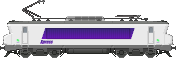
La « Nez cassé », locomotive bicourant parmi les plus répandues du parc MLTC. Les BB 22200 sont les bêtes de somme des Xpress français, capables de circuler sur l'ensemble du réseau électrifié.
BB 25500
Dernière MAJ : 21/02/2026
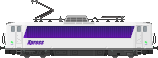
Locomotive bicourant de la famille des « Danseuses », la BB 25500 est une machine fiable et polyvalente. Elle assure des Xpress sur les lignes classiques du nord-est de la France.
BB 26000
Dernière MAJ : 21/02/2026
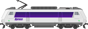
La « Sybic », locomotive bicourant moderne et puissante. Apte à 200 km/h, la BB 26000 est la machine de référence pour les Xpress rapides sur le réseau français.
BB 36000
Dernière MAJ : 21/02/2026
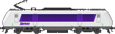
Locomotive tricourant Alstom apte au 25 kV, 1500 V et 3000 V, la BB 36000 est conçue pour les liaisons internationales. Elle assure des Xpress transfrontaliers vers la Belgique et l'Italie.
BB 47800
Dernière MAJ : 21/02/2026
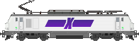
Locomotive bicourant de la famille Prima, la BB 47800 est l'une des machines les plus récentes du parc Xpress français. Puissante et moderne, elle complète les BB 26000 sur les axes principaux.
D'origine allemande
BR 101
Dernière MAJ : 21/02/2026
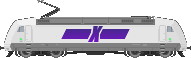
Locomotive universelle d'Adtranz, la BR 101 est le cheval de bataille des Xpress allemands. Apte à 220 km/h, elle tracte les compositions de voitures Intercity sur l'ensemble du réseau.
BR 102
Dernière MAJ : 21/02/2026
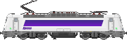
Locomotive Škoda de dernière génération, la BR 102 est destinée aux rames à deux niveaux du réseau allemand. Elle représente la modernisation du parc Xpress germanophone.
BR 103
Dernière MAJ : 21/02/2026
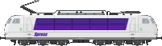
Locomotive légendaire de la DB, la BR 103 est une icône du rail allemand. Apte à 200 km/h, quelques exemplaires subsistent dans le parc Xpress pour des services réguliers et de prestige.
BR 113
Dernière MAJ : 21/02/2026
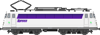
Version remotorisée de la BR 110, la BR 113 est une locomotive classique du réseau allemand. Elle complète le parc de traction sur les lignes Xpress secondaires.
BR 120
Dernière MAJ : 21/02/2026
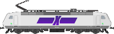
Première locomotive à onduleurs triphasés au monde, la BR 120 fut révolutionnaire à sa sortie. Elle assure encore des Xpress sur le réseau allemand, symbole de l'innovation ferroviaire.
BR 146.5
Dernière MAJ : 21/02/2026
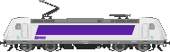
Locomotive Bombardier TRAXX P160 AC2 affectée aux services Xpress régionaux. La BR 146.5 assure des liaisons cadencées avec des rames de voitures à deux niveaux sur le réseau allemand.
BR 147.5
Dernière MAJ : 21/02/2026
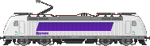
Évolution de la famille TRAXX, la BR 147.5 est la version la plus récente des locomotives Bombardier du parc Xpress. Elle apporte des améliorations en termes de puissance et de fiabilité.
BR 181.2
Dernière MAJ : 21/02/2026
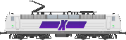
Locomotive bicourant franco-allemande, la BR 181.2 est historiquement affectée aux liaisons transfrontalières. Elle assure des Xpress entre la France et l'Allemagne, notamment sur l'axe Paris Sarrebruck.
ES64U4 (Taurus)
Dernière MAJ : 21/02/2026
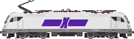
La Taurus de Siemens, locomotive quadricourant polyvalente. L'ES64U4 est apte à circuler dans la quasi-totalité des pays du réseau MLTC, ce qui en fait la machine idéale pour les Xpress internationaux en Europe centrale.
D'origine britannique
Class 89
Dernière MAJ : 21/02/2026
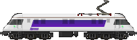
Prototype unique de locomotive électrique à grande vitesse britannique construite par BREL. La Class 89 est une pièce rare du parc Xpress, utilisée sur les services de la East Coast Main Line.
Class 91
Dernière MAJ : 05/11/2022
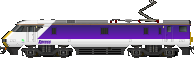
Locomotive électrique asymétrique de GEC-Alsthom, la Class 91 est le fer de lance des Xpress britanniques. Apte à 225 km/h (140 mph), elle forme avec les voitures Mk4 et le DVT les rames InterCity 225.
Class 91 Alsace
Dernière MAJ : 05/02/2024
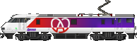
Variante spéciale de la Class 91 en livrée Alsace, affectée à des Xpress transfrontaliers reliant la Grande-Bretagne au continent via le tunnel sous la Manche.
H 160
Dernière MAJ : 16/08/2023
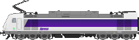
Locomotive électrique moderne construite par Hitachi, la H 160 représente le renouvellement du parc de traction britannique. Elle assure des Xpress sur les principaux axes anglais.
D'origine italienne
E 401
Dernière MAJ : 16/08/2023
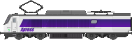
Locomotive bicourant italienne apte à 200 km/h, l'E 401 assure des liaisons Xpress rapides sur le réseau italien. Elle est issue de la même plateforme que les E 402.
E 402B
Dernière MAJ : 17/02/2026
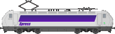
Locomotive polycourant italienne, l'E 402B est la machine de référence des Xpress en Italie. Puissante et rapide, elle tracte des rames de voitures sur les grands axes de la péninsule.
E 444R
Dernière MAJ : 17/02/2026
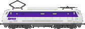
Surnommée « Tartaruga » (tortue), l'E 444R est une locomotive classique du réseau italien. Malgré son surnom, elle est apte à 200 km/h et assure des Xpress sur les lignes traditionnelles.
E 464
Dernière MAJ : 21/02/2026
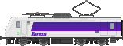
Locomotive compacte et polyvalente de Bombardier, l'E 464 est la machine la plus répandue du parc italien. Elle assure des Xpress régionaux et interrégionaux sur l'ensemble du réseau transalpin.
D'origine suisse
Re 460
Dernière MAJ : 21/02/2026
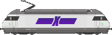
La Lok 2000 de SLM/ABB, locomotive emblématique du réseau suisse. La Re 460 assure les Xpress helvétiques à 200 km/h sur les axes principaux du réseau suisse.
Re 464
Dernière MAJ : 21/02/2026
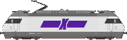
Locomotive Bombardier de la famille TRAXX, la Re 464 complète les Re 460 sur le réseau suisse. Elle assure des Xpress interrégionaux et transfrontaliers vers l'Italie et l'Allemagne.
Automoteurs diesel
D'origine danoise
IC3
Dernière MAJ : 21/02/2026
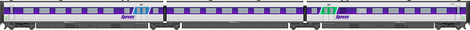
Automoteur diesel articulé d'ABB Scandia, l'IC3 est le matériel emblématique du réseau danois. Son nez en caoutchouc caractéristique permet le couplage en unité multiple pour les Xpress à fort trafic.
IR4
Dernière MAJ : 21/02/2026
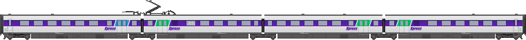
Automoteur diesel d'Alstom LHB, l'IR4 complète les IC3 sur le réseau danois. Il assure des Xpress interrégionaux avec un bon niveau de confort à bord.
Automotrices électriques
D'origine française
X 2000
Dernière MAJ : 10/08/2025
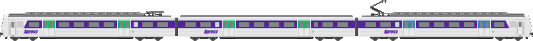
Automotrice électrique à grande capacité, la X 2000 est une rame articulée utilisée sur les Xpress périurbains et interrégionaux du réseau français.
D'origine allemande
BR 403 (série I)
Dernière MAJ : 06/12/2023
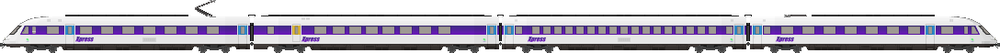
Automotrice électrique à grande vitesse de la première série, la BR 403 est un matériel historique du réseau allemand. Quelques exemplaires subsistent pour des services Xpress de prestige.
D'origine autrichienne
Reihe 4010
Dernière MAJ : 13/10/2023
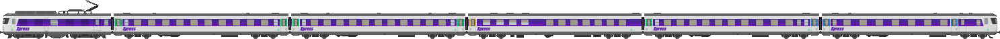
Automotrice électrique articulée de SGP, la Reihe 4010 est le matériel classique des Xpress autrichiens. Elle assure des liaisons rapides à travers les Alpes avec un confort de haut niveau.
D'origine française
T3000
Dernière MAJ : 06/12/2023
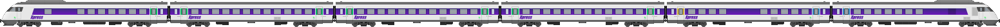
Turbotrain français (fictif), commandé en 1973 comme nouvelle série à la suite des T2000.
Voitures
D'origine française
Corail VU A9
Dernière MAJ : 22/09/2022
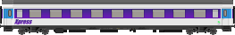
Voiture Corail de 1ère classe à 9 compartiments. Les Corail VU sont les voitures historiques du parc Xpress français, fiables et confortables.
Corail VU A10
Dernière MAJ : 22/09/2022
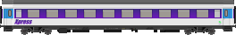
Voiture Corail de 1ère classe à 10 compartiments en espace ouvert.
Corail VU A3B4r
Dernière MAJ : 22/09/2022
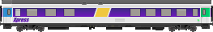
Voiture Corail mixte 1ère/2nde classe avec espace bar.
Corail VU A4B6
Dernière MAJ : 22/09/2022
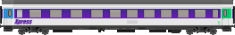
Voiture Corail mixte 1ère/2nde classe à compartiments.
Corail VU B11
Dernière MAJ : 22/09/2022
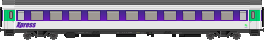
Voiture Corail de 2nde classe à 11 compartiments en espace ouvert.
Corail VU B5ux
Dernière MAJ : 18/12/2025
Voiture Corail pilote de 2nde classe, permettant la réversibilité des rames.
Corail VU B5uxh
Dernière MAJ : 18/12/2025
Voiture Corail pilote de 2nde classe avec accès handicapé.
Corail VU B6Du
Dernière MAJ : 22/09/2022
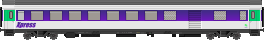
Voiture Corail de 2nde classe avec fourgon à bagages intégré.
Corail VU B6Dux
Dernière MAJ : 22/09/2022
Voiture Corail pilote de 2nde classe avec fourgon à bagages, permettant la réversibilité.
Corail VU B9ux
Dernière MAJ : 22/09/2022
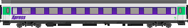
Voiture Corail de 2nde classe à 9 compartiments avec équipement de réversibilité.
Corail VU Du
Dernière MAJ : 16/08/2023
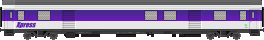
Fourgon générateur Corail, assurant l'alimentation électrique de la rame en l'absence de locomotive adaptée.
Corail MC76
Dernière MAJ : 22/09/2022
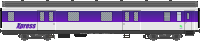
Voiture-restaurant Corail à cuisine modulaire, offrant un service de restauration à bord des Xpress français longue distance.
Corail VTU A10
Dernière MAJ : 22/09/2022
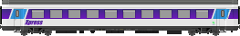
Voiture Corail VTU de 1ère classe à 10 compartiments, version modernisée des Corail VU avec portes d'accès à tourniquet.
Corail VTU A5B5
Dernière MAJ : 22/09/2022
Voiture Corail VTU mixte 1ère/2nde classe.
Corail VTU B11
Dernière MAJ : 22/09/2022
Voiture Corail VTU de 2nde classe à 11 compartiments.
Corail VTU B5r
Dernière MAJ : 22/09/2022
Voiture Corail VTU de 2nde classe avec espace bar-restaurant.
Corail VTU B7 PMR
Dernière MAJ : 22/09/2022
Voiture Corail VTU de 2nde classe aménagée pour les personnes à mobilité réduite (PMR).
Corail VTU VRrtu
Dernière MAJ : 22/09/2022
Voiture-restaurant Corail VTU, assurant le service de restauration à bord des Xpress longue distance.
VE2N A13
Dernière MAJ : 13/10/2022
Voiture à deux niveaux de 1ère classe à grande capacité. Les VE2N augmentent le nombre de places assises sur les Xpress à forte affluence.
VE2N B15
Dernière MAJ : 13/10/2022
Voiture à deux niveaux de 2nde classe.
VE2N B12Dux
Dernière MAJ : 13/10/2022
Voiture pilote à deux niveaux de 2nde classe avec fourgon, permettant la réversibilité des rames VE2N.
VE2N B8rtux
Dernière MAJ : 13/10/2022
Voiture à deux niveaux de 2nde classe avec espace bar-restaurant intégré.
NG88 A10
Dernière MAJ : 12/01/2024
Voiture de nouvelle génération (1988) de 1ère classe. Les NG88 offrent un confort supérieur aux Corail sur les Xpress premium.
NG88 B11
Dernière MAJ : 12/01/2024
Voiture NG88 de 2nde classe à 11 compartiments.
NG88 B5r
Dernière MAJ : 12/01/2024
Voiture NG88 de 2nde classe avec espace bar-restaurant.
NG88 B7Dx
Dernière MAJ : 12/01/2024
Voiture pilote NG88 de 2nde classe avec fourgon, permettant la réversibilité des rames.
Tronçon TGV Duplex court
Dernière MAJ : 22/09/2022
Tronçon de remorque TGV PSE réutilisé comme voiture intercalaire dans certaines compositions Xpress, offrant une capacité supplémentaire avec des bogies de type articulé.
Tronçon TGV Duplex DC
Dernière MAJ : 22/09/2022
Tronçon de remorque TGV Duplex à deux niveaux reconverti pour le service Xpress, offrant une grande capacité en places assises.
USI2 A5B5
Dernière MAJ : 13/07/2024
Voiture universelle à deux niveaux, mixte 1ère/2nde classe. Les USI2 apportent une grande capacité au réseau français.
USI2 B10
Dernière MAJ : 13/07/2024
Voiture à deux niveaux de 2nde classe à grande capacité.
USI2 B5r
Dernière MAJ : 13/07/2024
Voiture à deux niveaux de 2nde classe avec espace bistro.
D'origine allemande
Apmz 121
Dernière MAJ : 02/11/2022
Voiture de 1ère classe à compartiments ouverts, type Intercity allemand.
Apmz 123
Dernière MAJ : 02/11/2022
Voiture de 1ère classe Intercity, version modernisée.
Avmz 109
Dernière MAJ : 02/11/2022
Voiture de 1ère classe à compartiments fermés, offrant un haut niveau d'intimité.
Avmz 111
Dernière MAJ : 02/11/2022
Voiture de 1ère classe Intercity à espace ouvert.
Avmz 207
Dernière MAJ : 02/11/2022
Voiture de 1ère classe de dernière génération, au confort modernisé.
Bm 235
Dernière MAJ : 02/11/2022
Voiture de 2nde classe à compartiments ouverts.
Bpmz 291
Dernière MAJ : 02/11/2022
Voiture de 2nde classe Intercity à espace ouvert.
Bpmz 292
Dernière MAJ : 02/11/2022
Voiture de 2nde classe Intercity modernisée.
Bpmz 295
Dernière MAJ : 02/11/2022
Voiture de 2nde classe de dernière génération du parc Intercity allemand.
Bvmz 185
Dernière MAJ : 02/11/2022
Voiture de 2nde classe à compartiments fermés.
Bpmbdzf
Dernière MAJ : 02/11/2022
Voiture pilote de 2nde classe avec fourgon, permettant la réversibilité des compositions Intercity allemandes.
ARkimbz
Dernière MAJ : 02/11/2022
Voiture mixte 1ère classe / restaurant avec compartiment cinéma, une spécialité du parc Intercity allemand.
WRkmz
Dernière MAJ : 02/11/2022
Voiture-restaurant du parc Intercity allemand, offrant un service de restauration complète à bord.
D'origine britannique
Mk4 DVT
Dernière MAJ : 05/11/2022
Driving Van Trailer (DVT), voiture pilote-fourgon permettant la conduite de la Class 91 en pousse. Forme avec les Mk4 les rames InterCity 225.
Mk4 DVT Alsace
Dernière MAJ : 05/02/2024
Variante Alsace du DVT, affectée aux rames transfrontalières.
Mk4 FO
Dernière MAJ : 05/11/2022
Voiture de 1ère classe (First Open) de la famille Mk4.
Mk4 FO Alsace
Dernière MAJ : 05/02/2024
Variante Alsace de la voiture de 1ère classe Mk4.
Mk4 RFM
Dernière MAJ : 05/11/2022
Voiture-restaurant (Restaurant First Miniature) Mk4, assurant la restauration à bord des Xpress britanniques.
Mk4 RFM Alsace
Dernière MAJ : 05/02/2024
Variante Alsace de la voiture-restaurant Mk4.
Mk4 TSO
Dernière MAJ : 05/11/2022
Voiture de 2nde classe (Tourist Standard Open) Mk4.
Mk4 TSO Alsace
Dernière MAJ : 05/02/2024
Variante Alsace de la voiture de 2nde classe Mk4.
D'origine italienne
Viaggio A
Dernière MAJ : 22/07/2025
Voiture Viaggio de 1ère classe, construite par un consortium européen. Elle équipe les Xpress italiens et internationaux avec un confort de haut niveau.
Viaggio AR
Dernière MAJ : 22/07/2025
Voiture Viaggio mixte 1ère classe / restaurant.
Viaggio B
Dernière MAJ : 22/07/2025
Voiture Viaggio de 2nde classe.
D'origine espagnole
Talgo VII
Dernière MAJ : 21/02/2026
Voiture pendulaire Talgo de série VII, à essieux indépendants et changement d'écartement automatique. Utilisée sur les Xpress espagnols pour franchir les transitions entre écartement ibérique et standard.
D'origine internationale
UIC B10
Dernière MAJ : 21/02/2026
Voiture UIC de 2nde classe au standard européen, interopérable sur l'ensemble du réseau MLTC. Utilisée sur les Xpress internationaux transfrontaliers.